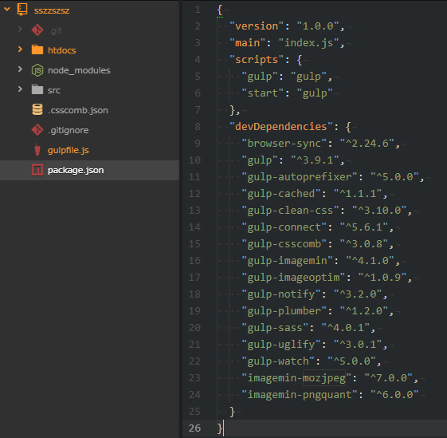
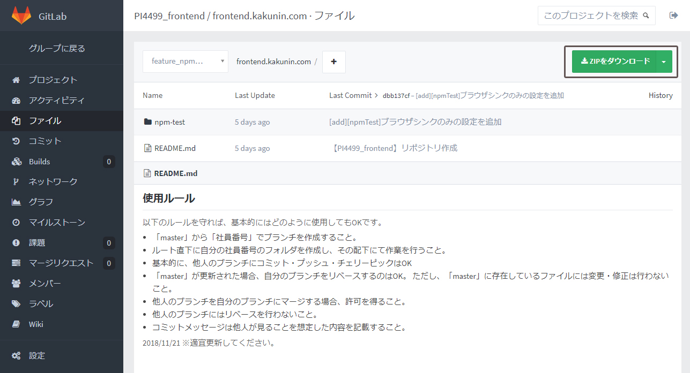

※以下、参考程度にすること※
ディレクトリ構造とpackage.json
基本的には「src」の中身をコンパイルなりなんなりして「htdocs」に吐き出す。という構成。必要によって書き換えてください。
gulpfile.js
var gulp = require('gulp');
var sass = require('gulp-sass');
var watch = require('gulp-watch');
var plumber = require('gulp-plumber'); //強制停止を防止
var notify = require('gulp-notify'); //通知を表示
var browserSync = require('browser-sync'); //ブラウザシンク
var ssi = require('connect-ssi'); //ssi
var runSequence = require('run-sequence');
var crLfReplace = require ('gulp-cr-lf-replace'); //改行コード
var convertEncoding = require ('gulp-convert-encoding'); //文字コード
var pleeease = require('gulp-pleeease');
var cache = require('gulp-cached');
var jsmin = require('gulp-uglify');
var imagemin = require('gulp-imagemin'); // 画像圧縮
var pngquant = require('imagemin-pngquant'); // 圧縮率を高めるのにプラグインを入れる png
var mozjpeg = require('imagemin-mozjpeg'); // 圧縮率を高めるのにプラグインを入れる jpg
// paths
var srcDir = 'src';
var dstDir = 'htdocs';
var targetDir = '';
var targetPage = '';
// css
gulp.task('sass', function() {
return gulp.src(srcDir + '/**/*.scss')
.pipe(plumber({
errorHandler: notify.onError('<%= error.message %>')
}))
.pipe(sass({
outputStyle: 'expanded' // expanded: 展開 compressed : 圧縮
}))
.pipe(pleeease({
rem: {rootValue: '10px'},
autoprefixer: {
browsers: ['iOS 10', 'Android 4.4', 'last 2 version']
},
opacity: false,
minifier: false // 圧縮しない場合：false
}))
.pipe(cache())
.pipe(crLfReplace({changeCode: 'CR+LF'}))// 改行コード変更
.pipe(convertEncoding({to: 'UTF-8'})) // 文字コード変更
.pipe(gulp.dest(dstDir))
});
// browserSync
gulp.task('browserSync', function() {
return browserSync.init({
server: {
baseDir: dstDir, // ルートとなるディレクトリを指定
port: 3001,
middleware: [
ssi({
baseDir: dstDir,
ext: '.html'
})
]
},
startPath: 'index.html',
open: 'external',
notify: false
});
});
//reload
gulp.task('reload', function() {
browserSync.reload();
});
//watchタスク
gulp.task('watch', function() {
watch("./**/*.scss", function(event) {
gulp.start("sass");
});
watch(dstDir + '/**/*.*', function(event) {
gulp.start("reload");
});
browserSync.reload();
});
// default /////////////////////////////////////
gulp.task('default', function(callback) {
return runSequence(
'browserSync',
'sass',
'watch',
callback
);
});
//js min
gulp.task("jsmin", function() {
return gulp.src(srcDir + '/**/' + targetDir + '/**/*.js')
.pipe(plumber())
.pipe(jsmin())
.pipe(gulp.dest(dstDir))
.pipe(notify('js minify finished'))
});
//imagemin
gulp.task('imgmin', function() {
return gulp.src(srcDir + '/**/' + targetDir + '/**/*.{jpg,jpeg,png,gif}')
.pipe(plumber())
.pipe(imagemin([
pngquant({
quality: '60-80',
speed: 1,
floyd: 0
}),
mozjpeg({
quality: 85,
progressive: true
}),
imagemin.svgo(),
imagemin.optipng(),
imagemin.gifsicle()
]))
.pipe(notify('image minified'))
.pipe(gulp.dest(dstDir))
.pipe(notify('image minify finished'))
});
// minify /////////////////////////////////////
gulp.task('minify', function(callback) {
return runSequence(
'jsmin',
'imgmin',
callback
);
});
解説
gulpfile.jsの書き方
1行目から16行目までは使用するパッケージの宣言。
// css
gulp.task('sass', function() {
return gulp.src(srcDir + '/**/*.scss')
.pipe(plumber({
errorHandler: notify.onError('<%= error.message %>')
}))
.pipe(sass({
outputStyle: 'expanded' // expanded: 展開 compressed : 圧縮
}))
.pipe(pleeease({
rem: {rootValue: '10px'},
autoprefixer: {
browsers: ['iOS 10', 'Android 4.4', 'last 2 version']
},
opacity: false,
minifier: false // 圧縮しない場合：false
}))
.pipe(cache())
.pipe(crLfReplace({changeCode: 'CR+LF'}))// 改行コード変更
.pipe(convertEncoding({to: 'UTF-8'})) // 文字コード変更
.pipe(gulp.dest(dstDir))
});
- ■gulp.task('プラグイン名',function(){});
gulpを使って処理してほしいことを書きます。
ここではまず、sassをコンパイルするタスクをかきたいので、プラグイン名の部分を「sass」としました。 - ■gulp.src('ディレクトリ名')
実行するファイルのパスを書きます。上記では、20行目から23行目でファイル全体のパスを宣言しています。 - ■.pipe(プラグイン名())
処理の内容をかきます。.pipe(プラグイン名(詳細項目の設定))でどんどんつなげて書くことができますので、上記の「sass」のタスクでは6個の処理をつなげて設定しています。（各処理の内容は後述） - ■.pipe(gulp.dest('ディレクトリ名'))
処理の結果のファイルが吐き出さされるパスを指定しています。
実行する際のコマンドはデフォルトの処理だけでよければ「npm run gulp」となります。
これで実行されるのはデフォルトに登録してあるタスクのみです。（74行目の内容が実行されます。）
デフォルト登録していないタスクを実行するには「npm run gulp ○○○○」とコマンド入力すれば実行されます。
上記の例でいえば、画像圧縮のタスクを実行したい場合、「npm run gulp
imagemin」と入力すればsrcディレクトリ内の画像が、htdocs内に圧縮して吐き出される。ということ。
■gulp.watch()
//watchタスク
gulp.task('watch', function() {
gulp.watch(paths.srcDir + '/**/*.scss', ['sass']);
gulp.watch(dstGlob + '/**/*.*', ['reload']);
browserSync.reload();
});
変更され、保存されたときを監視することができるタスク。
書き方は「gulp.watch('変更されたら更新してほしいファイルのパス', ['タスク名'])」
例えば、一番上は開発環境の「src/」配下のscssが変更・保存されたら「gulp.task('sass', function() {}」に登録されている、「sass」のタスクを実行し、コンパイルされるという処理を行う。
その下の行は各ファイルが変更・保存されたら、ブラウザをリロードし、各ブラウザに変更内容を自動で表示させるための「reload」のタスクを実行する。という内容。
上記のwatchタスクの場合、ファイルを新規作成したとき、コンパイルされないことがあるため、以下のようにコードを改善。
//watchタスク
gulp.task('watch', function() {
watch("./**/*.scss", function(event) {
gulp.start("sass");
});
watch(dstDir + '/**/*.*', function(event) {
gulp.start("reload");
});
browserSync.reload();
});
参考
＞gulp watchコマンドでファイル追加を検知しない場合の対処方
■gulp.task('default',[]);
/// default ////////////////////////////////////////////
gulp.task('default', ['watch','browserSync']);
デフォルトでどのようなタスクを処理するかを記載する。この場合[]の中身がデフォルトで実行される処理。
つまり「変更があるか監視」→「ローカルサーバをリロードして更新」→「各ブラウザを更新」という一連の流れがデフォルトで登録されている。ということ。
// default /////////////////////////////////////
gulp.task('default', function(callback) {
return runSequence(
'browserSync',
'sass',
'watch',
callback
);
});
各パッケージの説明
- ■gulp-sass
- sassやscssをコンパイルするパッケージ。コンパイル方法にはどのようにcssファイルを作成するか設定できる
（すべて一行にするとか、いつも見ているような改行・インデント付きでコンパイルする、など。）
＞gulp-sassのコンパイル後のcssをいつもの見た目にしたい
- ■gulp-plumber
- watch中にエラーが発生するとwatch自体が停止してしまうため、これを防止するために使われています。
＞gulp-plumberとgulp-notifyを使ったデスクトップ通知
- ■gulp-connect
- ローカルサーバを立ち上げるパッケージ
＞gulp-connectモジュールを使ったローカルサーバの起動
- ■browser-sync
- ファイル保存時に変更内容を自動で更新するためのパッケージ（めっちゃ便利）
- ■connect-ssi
- ただブラウザシンクのパッケージをインストールしてもssiが表示されないので、「connect-ssi」というパッケージでssiも表示できるようにしています。
＞browser-syncでSSIを使う
- ■gulp-csscomb
- CSSの整形に使用。クラスをつなぐときの半スぺの有無など細かいCSSの書き方を一気に修正できる。
また、プロパティをアルファベット順などに並び替えることも可能。
「.csscomb.json」に各設定を記述することで好みの設定ができる。設定項目の作成は下記サイトが便利。
＞CSScomb
- ■gulp-cached
- 変更したファイルのみ処理がはしるようにするパッケージ。無駄な処理が減り、待機時間も減らすことができます。
- ■gulp-autoprefixer
- ベンダープレフィックスを自動付与してくれるパッケージ。対象のバージョンを記載することでどの程度まで対応するかを設定できる。
＞Autoprefixerの対象ブラウザって、どうやって選べばいいの？
- ■gulp-uglify
- JSを一行化するパッケージ
- ■gulp-imagemin
- 画像圧縮のためのパッケージ
- ■imagemin-pngquant
- png画像の圧縮率を高めるパッケージ。「gulp-imagemin」だけだと圧縮してもほとんど変わらないのでこちらも併用
＞Gulpでpngquantを使ってPNGの減色＆軽量化
- ■imagemin-mozjpeg
- jpg画像の圧縮率を高めるパッケージ。「gulp-imagemin」だけだと圧縮してもほとんど変わらないのでこちらも併用
ただし併用するとうまくいかないバグがある。
＞gulp-imageminでjpgファイルを圧縮する時に遭遇したエラーと解決法
上記まとめると、使用するコマンドは以下。
- sassのコンパイル・ブラウザシンクはデフォルトなので「npm run gulp」
- css圧縮には「npm run gulp cssmin」
- js圧縮には「npm run gulp jsmin」
- 画像圧縮には「npm run gulp imagemin」
参考サイト
Atomの便利機能
上記プラグインを使用すればコマンド打たなくてもクリックでタスクを実行できるようになります。
使い方はパッケージをインストール後、Atomの上記メニューの「パッケージ」から「gulp-control」＞「opne」をクリック。右側にタブがひらく。
そのタブの中にgulpfole.jsで定義してあるタスクが一覧で出てくるのでそれをクリックするだけで実行されます。これでいちいちコマンドプロンプトを開く必要がなくなりました。

クリックすると実行され、再度クリックするとタスクが終了します。
ブラウザシンク
sassやscssを案件で使用しない！ということも多いと思うので、以下ブラウザシンクのみ動くようにした環境。
ブラウザシンクを実行していればファイルを修正してF5キーを押して更新しなくても、自動で更新されるのでとても便利です。
ブラウザシンクとは
修正して保存した朱運管に自動でブラウザがリロードされます。F5を押す必要もなく、かつ、GC・FF・IE全部のブラウザに全て変更内容が反映されます。
■使い方
以下のボタンからzipファイルをDLし適当なところに解凍する（apache配下でなくても構いません。どこでもローカルサーバが（多分）立ち上がります。）
FE GitLab 解凍すると「npm-test」フォルダがあると思うので、「npm-test」をAtomで開き、Atomの上記メニューの「パッケージ」から「gulp-control」＞「opne」をクリック。
すると以下のような画面になるので、「default」をクリック。するとローカルサーバが自動で立ち上がります。以降「htdocs」内のファイルが保存されるたびに自動でブラウザが更新されます。
デフォルトで入っている「htdocs/index.html」と「htdocs/css/style.css」をいじると、自動で更新されるのがわかるかと思います。
（ちなみにブラウザシンクだけ設定してもssiファイルが表示されないので表示するためのパッケージもインストールしています。）